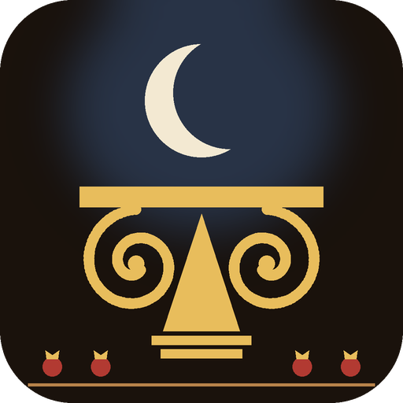

Sky Luach לוח השמים
𐤋𐤅𐤇𐤟𐤄𐤔𐤌𐤉𐤌
The Jewish calendar three ways: fixed, observed by the crescent, and by the true new moon (Early Temple Period), from NASA JPL astronomy.
Opening Sky Luach ...
Open Sky Luach
To put Sky Luach on this iPad's home screen: tap the Share button
(the square with an arrow, at the top right on iPad or the bottom on iPhone), scroll down, tap
Add to Home Screen, then Add.
If it has been asleep it shows "This app has gone to sleep": tap the button there and wait about a minute.
Put it on your home screen
The page must be opened in Safari on iPhone/iPad, or in Chrome on Android.
iPhone or iPad (Safari): tap the Share button (square with an arrow), then Add to Home Screen, then Add.
Android (Chrome, Samsung Internet, Edge): tap the three dots, then Add to home screen or Install app.
Then open it from the gold capital-and-crescent icon Sky Luach: it goes straight to the app.
Free, no ads, no account. Sun and Moon from NASA JPL (DE440s). Nothing about you is stored.